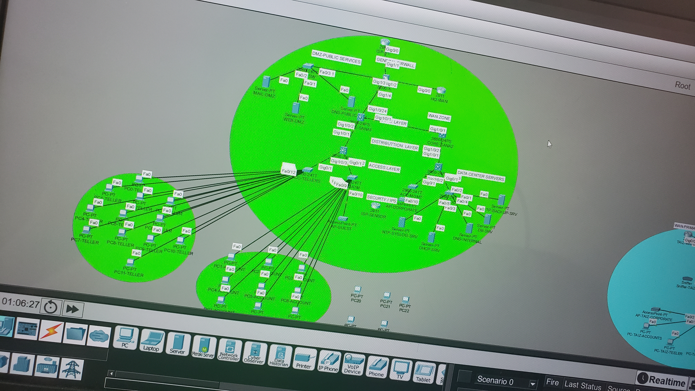
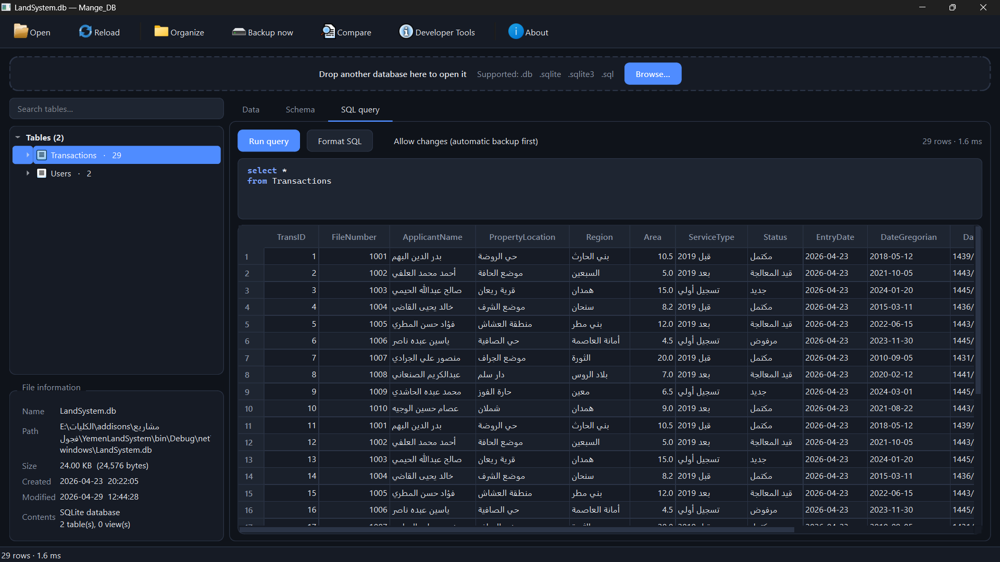
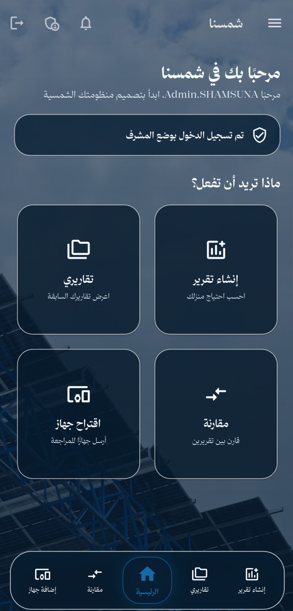

البرمجة وهندسة البرمجيات
C# · .NET · WPF · Windows Forms · PHP · Laravel · Python · JavaScript · Flutter · Dart
هندسة برمجيات · شبكات · سحابة
أنا بدرالدين حسين البحم، طالب تقنية معلومات ومطور شغوف بتحويل الأفكار المعقدة إلى أنظمة عملية، واضحة، وقابلة للتوسع.
أدرس تقنية المعلومات في الجامعة التخصصية الحديثة بصنعاء، وأتنقل بين هندسة البرمجيات وهندسة الشبكات لأفهم الصورة كاملة: كيف تُصمم الأنظمة، كيف تتواصل، وكيف تبقى موثوقة.
أركز حاليًا على مسار CCNP، الحوسبة السحابية، وأطر تطوير البرمجيات الحديثة — مع اهتمام دائم بالتعلم من المشاريع الحقيقية.
مجموعة عملية من اللغات والأدوات التي أستخدمها لبناء تطبيقات، تصميم شبكات، وإدارة بيئات تشغيل.
C# · .NET · WPF · Windows Forms · PHP · Laravel · Python · JavaScript · Flutter · Dart
CCNP Path · Cisco Packet Tracer · GNS3 · Wireshark · OSPF · HSRP · VLAN · VoIP · ASA
SQL Server · SQLite · MySQL · Oracle APEX · Git · Docker · Linux · Visual Studio
AWS EC2 · Cloud Practitioner · Linux Server Administration · XAMPP · VS Code
من الشبكات المؤسسية إلى تطبيقات سطح المكتب والتجارة الإلكترونية — كل مشروع مساحة للتعلم وصناعة أثر ملموس.

NETWORKشبكة مصرفية متعددة الفروع في Packet Tracer لصنعاء وتعز وعدن، باستخدام OSPF وHSRP وVLAN وVoIP وضوابط أمنية.

DESKTOP APPطبيق سطح مكتب باستخادم بايثون يعمل على تعديل قواعد البيانات وادارتها باحترافية

FLUTTERالجامعة التخصصية الحديثة · صنعاء، اليمن